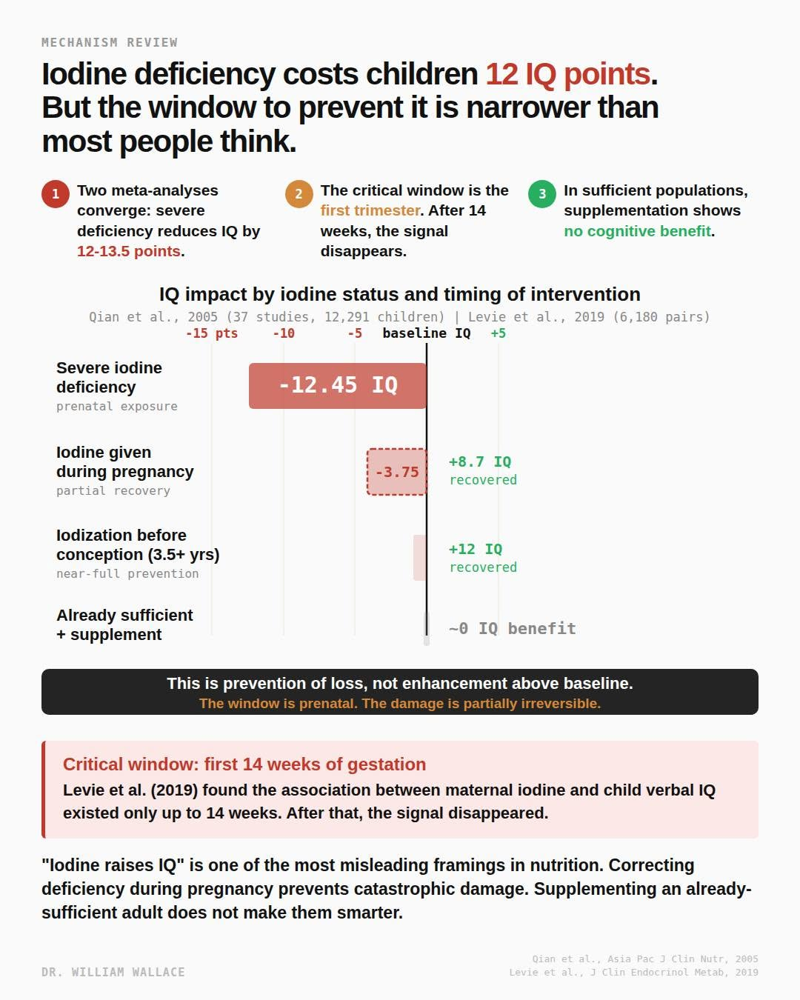

Iodized salt is not the problem; excess sodium is
Louis argues iodized salt is harmless in reasonable amounts, and the real risk is too much sodium overall.
A shared summary of two meta-analyses of iodine deficiency and IQ: Bleichrodt and Born (1994, 21 studies) found 13.5 IQ points and Qian et al. (2005, 37 studies, 12,291 Chinese children) found about 12.45 points, in deficient regions. Hashtag-only post.
"Iodine raises IQ by 12 points" is one of the most frequently cited claims in the supplement space. The number is real. The context it's usually presented in is not.
Two meta-analyses have estimated the cognitive cost of iodine deficiency. Bleichrodt and Born (1994) analyzed 21 studies across moderately to severely iodine-deficient regions and found that iodine-sufficient populations scored an average of 13.5 IQ points higher than deficient populations. Qian et al. (2005, Asia Pac J Clin Nutr) analyzed 37 studies totaling 12,291 Chinese children and found a 12.45 IQ point deficit in children exposed to severe iodine deficiency prenatally.
These numbers are consistent and large. Nearly a full standard deviation. The problem is what happens next in most content: the leap from "deficiency causes damage" to "supplementation makes you smarter."
The Qian meta-analysis breaks the intervention data into tiers. When iodine was given to deficient mothers during pregnancy, their children recovered an average of 8.7 IQ points compared to children of mothers who remained deficient. That leaves roughly 3.75 points of damage that supplementation during pregnancy could not reverse. The damage had already begun.
The strongest outcomes came from communities where iodization programs had been running for 3.5 years or longer before conception. Children born into these communities recovered approximately 12 IQ points on the Raven Scale, nearly the full deficit. The difference: the mothers were iodine-replete before they became pregnant. The fetal brain was protected from the start.
Levie et al. (2019, J Clin Endocrinol Metab) sharpened this further with a meta-analysis of individual participant data from 6,180 mother-child pairs across three European birth cohorts. They found a curvilinear association between maternal urinary iodine and child verbal IQ. Critically, stratified analyses showed this association existed only up to 14 weeks of gestation. In samples collected after 14 weeks, the relationship between iodine status and verbal IQ disappeared. The window is the first trimester. Once the foundational neural architecture is laid, the opportunity to prevent iodine-related damage closes.
What about supplementing people who are already iodine-sufficient? Compiled evidence from post-natal iodization studies in iodine-replete populations shows essentially no cognitive benefit. This has been reviewed across multiple studies and the consensus is consistent: once iodine status is adequate, additional iodine does not raise IQ. It is not an enhancer. It is protection against a specific deficiency during a specific developmental window.
Two additional nuances worth noting. First, the Levie data showed that excess iodine was also associated with worse outcomes. The relationship is curvilinear, not linear. More is not better. Second, mild iodine deficiency is not confined to developing countries. Bath et al. (2013, Lancet) found that even mild first-trimester iodine deficiency in UK women was associated with lower verbal IQ and reading scores in their children at age 8-9. The UK does not mandate salt iodization. The assumption that developed countries have solved iodine deficiency is not universally accurate.
The practical takeaway: iodine status matters enormously, but almost entirely during fetal development. If you are pregnant or planning to become pregnant, confirming adequate iodine intake is one of the highest-impact nutritional decisions available. If you are a healthy adult in an iodine-sufficient country already consuming iodized salt, supplemental iodine is unlikely to improve your cognition. The 13-point number is about preventing catastrophic loss during a narrow window, not about enhancement above baseline.
Qian et al., Asia Pac J Clin Nutr, 2005
Bleichrodt & Born, 1994
Levie et al., J Clin Endocrinol Metab, 2019
Bath et al., Lancet, 2013
Louis argues iodized salt is harmless in reasonable amounts, and the real risk is too much sodium overall.

A shared piece argues that iodised salt, which eliminated goitre and raised national IQs, is being displaced by fashionable salts that lack meaningful iodine. Loosely related to heart health via salt choice, mainly a nutrition-adequacy point.
Louis cites a New Scientist column warning that fashionable salts are causing iodine deficiency to return. He lists seafood, dairy, seaweed, skin-on potatoes and lima beans as sources and suggests a basic multivitamin with iodine as insurance.
Louis recommends Morton Lite Salt, a 50:50 mix of regular salt and potassium chloride that is also iodized (60 mcg iodine per 1/4 teaspoon, 40% of the RDA). He warns people with kidney problems should not use potassium salts because excess potassium can cause fatal cardiac arrest.
The poster says arterial stiffness likely contributes substantially to CVD, driven mainly by aging of elastin in the artery wall rather than by plaque or calcification. He says diet, exercise and some drugs and supplements may prevent or reverse it, referencing a Mike Hill clip.
Louis shares an NPR story about a man genetically destined for early Alzheimer's whose brain remained healthy at 75, speculating that decades of heat in navy engine rooms raised protective heat shock proteins. The researchers are unsure of the cause and this is a single case.